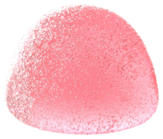
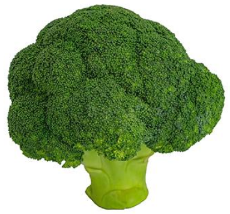
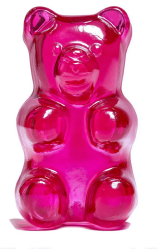
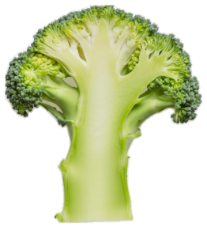

x — 일상의 대상
출발점은 매일 먹는 음식
누구나 아는 대상이라 누구나 시작할 수 있다. 음식이 무엇인지보다, 그 안에 숨은 겹·결·송이·주름을 본다.




form = f(everyday)
일상에 공식을 대입하면, 조형이 나온다.
Scroll ↓
01 — Project
매일 먹는 음식에는 아직 아무도 꺼내 쓰지 않은 형태가 숨어 있다. FORMULA는 일상의 대상을 넣으면 조형이 나오는 공식이다. AI와 함께 음식의 특징을 읽어 조형 언어를 만들고, 그 조형으로 매일 쓰는 주방도구를 만들었다.
x — 일상의 대상
누구나 아는 대상이라 누구나 시작할 수 있다. 음식이 무엇인지보다, 그 안에 숨은 겹·결·송이·주름을 본다.




f — AI와 만든 조형 언어
AI가 사진에서 보이는 특징과 알려진 성질을 읽고, 20가지 도형과 7가지 모양 값으로 옮긴다. 말을 몰라도 비교하고 조합할 수 있는 언어.
form — 데일리 조형
특징을 섞어 대상을 벗어난 추상 조형을 만들고 3D로 세운다. 누구나 재료로 꺼내 쓸 수 있는 흰 조형.
object — 일상으로 돌아가기
음식에서 꺼낸 조형으로, 다시 음식을 담고 다루는 주방도구를 만들었다. 공식은 음식에서 시작했지만, 무엇에든 대입할 수 있다.
02 — Works
x 출처 → f 추출한 조형 → form 완성
03 — Research · FOODS CREATE NEW FORM
AI가 형태를 제안할 때, 우리는 어떤 판단을 AI에게 맡기고 있을까?
이미지 생성 AI는 글 한 줄이면 완성된 결과를 준다. 빠르지만, 사람의 역할은 'AI가 낸 결과 중 하나 고르기'로 좁아진다. 이 연구는 AI가 관찰하고 생성하는 일을 돕고, 무엇을 보고 무엇을 고를지는 사람이 정하게 했다.
01
관람객은 글을 쓰지 않는다. 사진과 특징을 고르고 조합하는 것으로 AI에게 방향을 준다.
02
조형을 만드는 AI에게는 음식 사진을 주지 않는다. 특징의 말과 모양 값만 건네 외형 복제가 아닌 번역이 되게 했다.
03
사진 고르기, 특징 고르기, 조합하기, 조형 고르기. 단계마다 결정이 사람에게 돌아온다.
관찰에서 형태까지, 7단계
Form language
특징을 글 카드로 보여줄 때는 읽고 비교하기 어려웠다. 특징마다 20가지 도형 중 하나를 고르고, 7가지 모양 값으로 다듬는다. 보이는 특징은 입자·얼룩·사선, 알려진 성질은 망점 질감으로 구분한다.
Findings